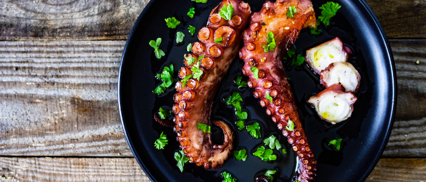

Grilled Octopus
Mediterranean Style Grilled Octopus

How to Grill Octopus
Octopus may seem like an intimidating-to-cook restaurant-only food,
but it’s surprisingly easy to grill at home. Here’s how to do it:
- Rinse the octopus. Wash your octopus thoroughly under cold water.
- Remove the eyes and beak. Use a small sharp knife (like a paring knife) to remove
the octopus’s eyes and beak if your fishmonger hasn’t already. To remove the beak,
you’ll first need to invert it (the beak points inward, like a belly button), then simply slice it off.
- Braise the octopus. Season a pot of water with bay leaves, lemon juice, peppercorns, and a handful of salt,
and bring it to a boil. Lower the heat to a simmer and add the octopus into the boiling, seasoned water. Braise until it’s tender,
approximately forty-five minutes.
-
Marinate the octopus. Remove the braised octopus from the pot, and store it in an airtight container until it’s
cooled and you’re ready to grill; this is also a good time to marinate the octopus.
- Grill the octopus. Heat your grill to high heat. Place the octopus (whole or sliced) on the grill and
let it cook until browned, approximately three to four minutes, then flip and grill for another three to four minutes and serve.
Mediterranean preparations of octopus are generally minimal, highlighting the freshness of the seafood with fresh lemon,
flaky salt, and just a handful of herbs.
Ingredients
- 2 bay leaves
- 3 rosemary sprigs
- 10 whole black peppercorns
- 2 teaspoons salt
- 5 garlic cloves smashed
- 3 lemons divided
- 3-pound octopus, cleaned, beak and eyes removed
- 3 tablespoons extra-virgin olive oil
- 1/2 teaspoon freshly ground black pepper
- 1/4 chopped parsley and dill to garnish
- flaky salt to garnish
Steps
- Fill a large pot with water and add the bay leaves, rosemary, peppercorns, 2 teaspoon of the salt, the garlic cloves, and 1 lemon, halved.
- Bring the braising liquid to a boil.
- Add the octopus to the boiling water and lower the heat to a simmer, cooking until the octopus is tender, approximately 45 minutes.
(Test the meat’s tenderness by piercing it with a sharp knife.)
- Using tongs, remove the octopus from the braising liquid and cut it into large pieces. Set the octopus aside to cool.
- In a medium bowl, combine the olive oil, black pepper, and the juice of 1 lemon.
- Add the cooled octopus to the marinade, cover, and refrigerate it for at least 2 hours or up to overnight.
- Start a charcoal or wood fire, or preheat your gas grill to high heat.
- Grill the octopus pieces until their exterior browns, but they’re still juicy inside, approximately 3–4 minutes per side.
- Remove the octopus pieces from the grill quickly, so they don’t overcook.
- Slice the remaining lemon into wedges and serve alongside the octopus.
- Garnish the grilled octopus with fresh parsley, dill, and flaky salt.